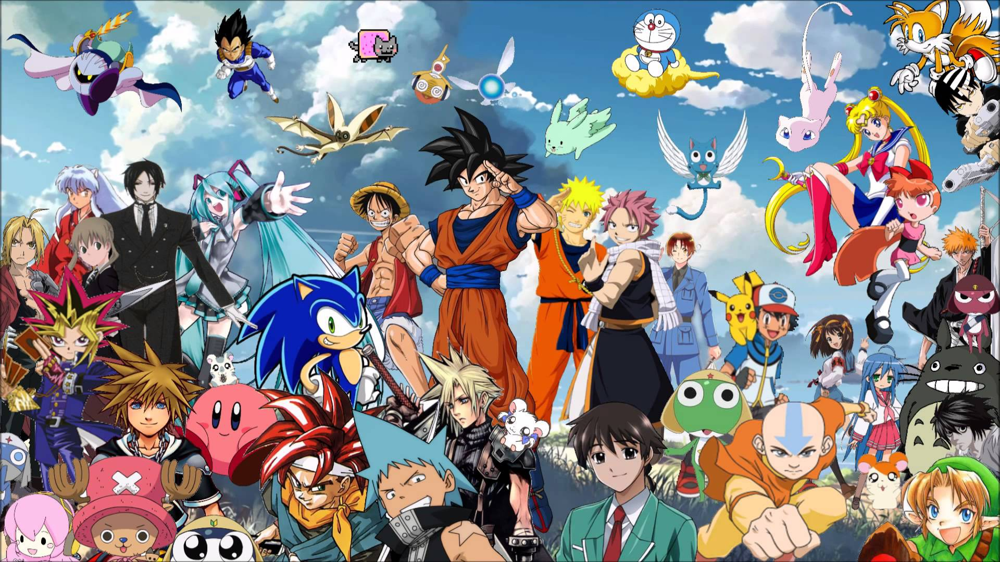
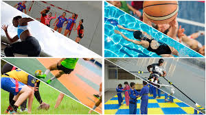
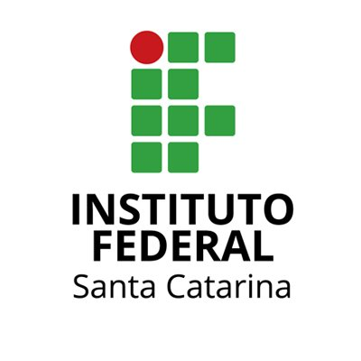
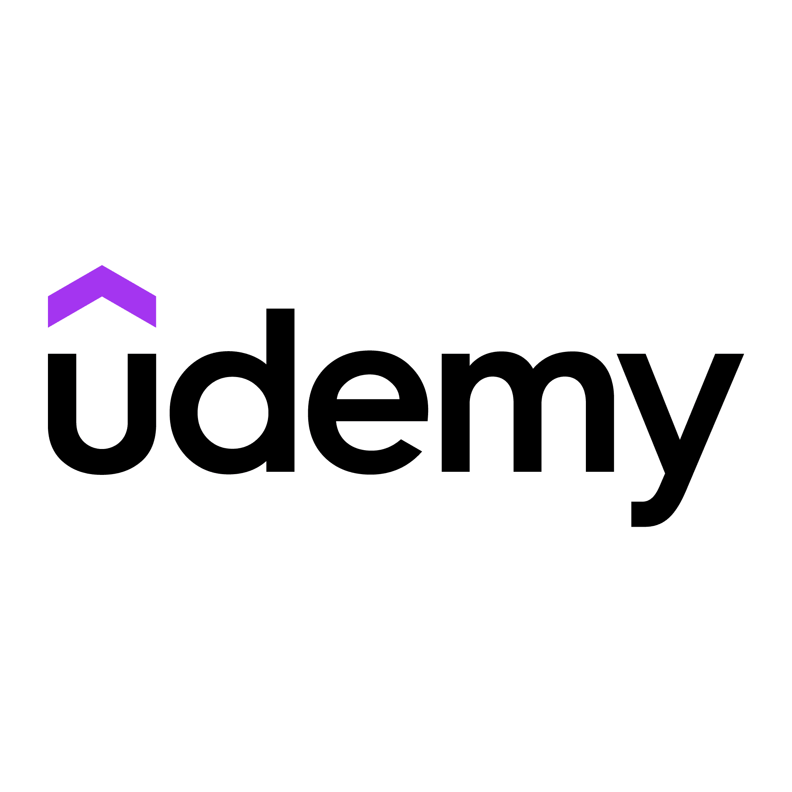

Sobre mim:
⭐ Caio Eduardo de Aguiar
⭐ Idade: 20 Anos
⭐ Nascido em Florianópolis
⭐ Formado em Técnico em Telecomunicações
Olá! Sou Caio Eduardo, estudante de Análise e Desenvolvimento de Sistemas e apaixonado por tecnologia e inovação. Tenho experiência em desenvolvimento front-end e suporte técnico, com estágios realizados em empresas de grande porte como Intelbras e Softplan. Minha trajetória acadêmica e profissional tem me dado uma base sólida em programação, redes e metodologias de desenvolvimento.
Hobbies:
Jogos
Animes
Esportes
Experiências Acadêmicas:

IFSC - SJ -- Graduação em Análise e Desenvolvimento de Sistemas
Presencial - Em andamento, conclusão em 2026.1
Conhecimentos Adquiridos:
⭐ Lógica de Programação
⭐ Estruturas de Dados
⭐ Banco de Dados
⭐ Desenvolvimento Web
⭐ Programação Orientada a Objetos (POO)
⭐ Sistemas Operacionais
IFSC - SJ -- Ensino Médio Integrado em Telecomunicações
Presencial - Concluído em 2023.2
Conhecimentos Adquiridos:
⭐ Redes de Computadores
⭐ Eletrônica Básica
⭐ Comunicação de Dados
⭐ Infraestrutura de Telecomunicações
⭐ Programação Básica
⭐ Manutenção de Equipamentos

Udemy -- Curso de Python 3 do básico ao avançado com projetos reais
Online - Em andamento, conclusão em 2024.2
Conhecimentos Desejados:
⭐ Sintaxe e Estruturas Básicas do Python
⭐ Manipulação de Arquivos e Dados
⭐ Programação Orientada a Objetos (POO) em Python
⭐ Bibliotecas Python (como Pandas, NumPy)
⭐ Desenvolvimento de Projetos Práticos
⭐ Web Scraping com Python
JavaScript, HTML e CSS para Iniciantes com Projetos Reais
Online - Concluído em 2023.2
Conhecimentos Adquiridos:
⭐ Estrutura e Sintaxe HTML
⭐ Estilização com CSS
⭐ Lógica Básica de JavaScript (Básico)
⭐ Manipulação do DOM (Básico)
⭐ Interatividade em Páginas Web (Básico)
⭐ Boas Práticas em Desenvolvimento Web
Experiências Profissionais:
Projetos

The Conundrum
The Conundrum é um projeto em que eu desenvolvi como Projeto Final no curso integrado de telecomunicações onde eu tinha que fazer um jogo co-op em dupla para a resolução de puzzles. O jogo conta com VoIP, 2 Finais e Easter Eggs. Feito em JS utilizando o framework Phaser3.
(Projeto produzido para a feira-de-jogos IFSC-SJ)
Project 1
Project 1 é um projeto em desenvenvolvimento sobre um jogo RNG, jogo totalmente multiplayer hospedado no roblox, consiste em um jogo em que você tem que ter a sorte de conseguir artefatos raros. feito em Lua, utilizando a interface gráfica do Roblox Studio. (Atualmente em hiato)
(Projeto feito em cooperação com alguns amigos)